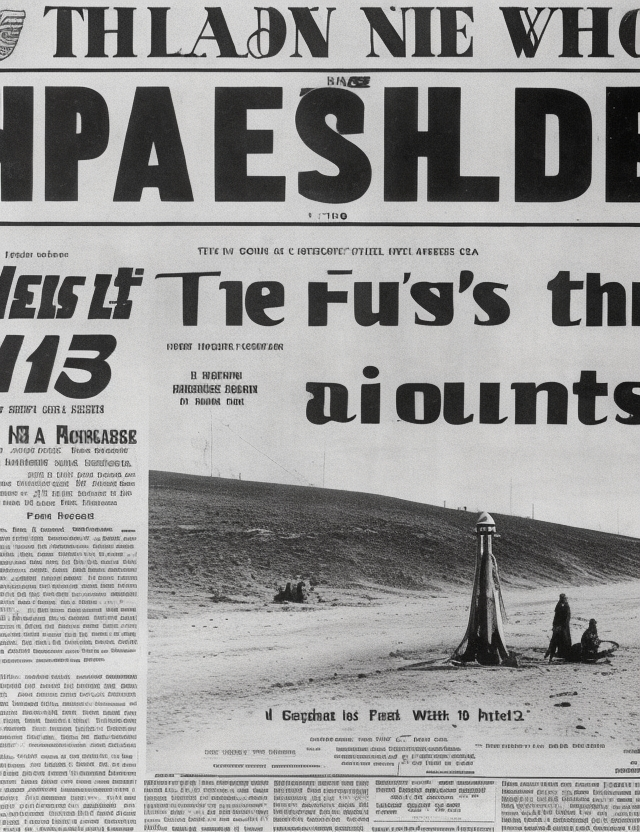
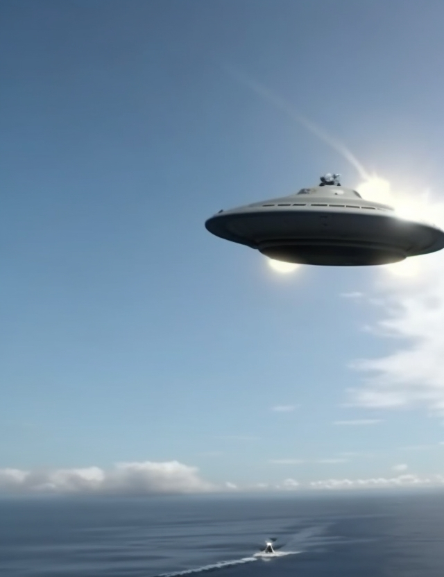

Introducción a los OVNIs
Los Objetos Voladores No Identificados (OVNIs) han sido motivo de fascinación y debate durante décadas. Desde avistamientos sorprendentes hasta encuentros inexplicables, esta sección te sumergirá en el intrigante mundo de los OVNIs y sus misteriosos avances.
Evidencia Histórica de Avistamientos
Desde la antigüedad hasta la era moderna, numerosos informes de avistamientos de OVNIs han capturado la atención de personas en todo el mundo. Examinaremos casos históricos famosos, como el Incidente de Roswell en 1947 y el avistamiento de Kenneth Arnold en 1947, para explorar cómo estos eventos han influido en la creencia en la existencia de vida extraterrestre.
Casos Documentados y Pruebas Fotográficas
Exploraremos casos documentados de avistamientos de OVNIs respaldados por pruebas fotográficas y testimoniales. Desde las imágenes icónicas capturadas por pilotos comerciales hasta los vídeos de la Marina de los EE. UU. mostrando objetos aéreos desconocidos en movimiento, estas pruebas visuales ofrecen un vistazo a lo inexplicable.
Encuentros Cercanos y Abducciones
Algunos informes de OVNIs van más allá del avistamiento a distancia y relatan encuentros cercanos y abducciones. En esta sección, exploraremos testimonios de personas que afirman haber tenido encuentros directos con seres extraterrestres y cómo estos relatos han influido en la cultura popular y la percepción pública de los OVNIs.
Perspectivas Científicas y Gubernamentales
A medida que avanzamos en nuestra comprensión del fenómeno OVNI, es importante explorar las perspectivas científicas y gubernamentales. Examina cómo las agencias gubernamentales han manejado informes de OVNIs, como el desclasificado informe del Pentágono en 2020. Además, considera las teorías que buscan explicar los OVNIs desde una perspectiva científica.
Conclusión
La presencia de OVNIs en la cultura humana ha generado debates apasionados y una búsqueda constante de respuestas. Esta página ha sido un punto de partida para explorar los aspectos más destacados del fenómeno OVNI, desde avistamientos históricos hasta la investigación contemporánea. A medida que seguimos buscando respuestas, una cosa es segura: el enigma de los OVNIs continuará cautivando a las mentes curiosas en todo el mundo.